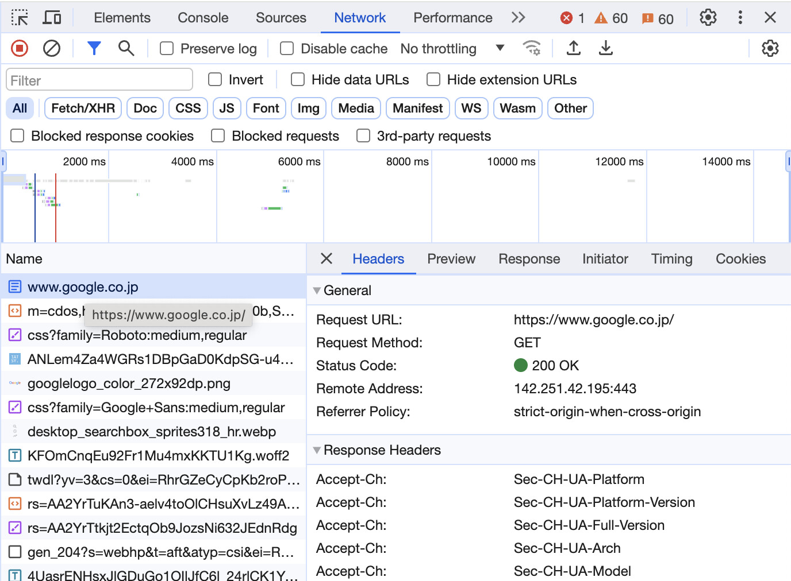

3. HTTP リクエスト#
ウェブ上でデータのやりとりをするためにはプロトコルと呼ばれるデータのやりとりの仕方を定めた規約に従う必要がある。HTTP は Hyper Text Transfer Protocol の略で、HTML で記述された文書をウェブ上でやりとりするためのプロトコルである。
皆さんが、Google Chrome や Firefox 等のウェブブラウザを使ってウェブページを閲覧しているときには、裏で、この HTTP に従ったデータのやりとりがなされている。
このやりとりは基本的にクライアント (ウェブページを閲覧する側のコンピュータ)から送信された HTTP リクエストを基に、サーバ (ウェブページを配信する側のコンピュータ)が HTTP レスポンスと呼ばれる応答を返す、という処理が行われている。
3.1. リクエストとレスポンスの内容#
リクエストとレスポンスの内容はプログラムを書かずとも、ウェブブラウザで確認することができる。以下では Google Chrome を使った場合の確認方法を紹介する。
まずはウェブブラウザを開き、Google のトップページにアクセスしてみよう。
ウェブページが開いたら、画面左上の「︙」ボタンをクリックして、設定メニューを開く。この設定メニューの中から「その他のツール」にある「ディベロッパーツール」を開こう。

ディベロッパーツールが開いたら、いくつかある項目の七から「Network」を選び、ページをリロードしよう。すると、ディベロッパーツールに以下のような情報が表示されるはずだ。
{kind=link}
この情報をよく見てみると、「Name」のリストの先頭に「www.google.co.jp」という項目があるので、これをクリックする。すると、その右側にどのようなリクエストが送られて、どのようなレスポンスが返ってきているのかが表示される。これらはそれぞれ、ディベロッパーツールの中で「Request Headers」という項目と「Response Headers」という項目から確認できる。
これらのヘッダ情報には、非常に多くの情報が含まれているが、リクエストヘッダであれば、ウェブページの URL やページを取得する方法 (GET と POST があるが、詳細は後述する)などが含まれており、レスポンスヘッダであれば、
3.2. Python によるウェブページの取得#
Python でウェブページのデータをサーバーからウェブページを取得するための標準ライブラリにurllibがある。まずは、urllibの基本関数であるurlopenを用いて、ウェブページの内容を取得してみよう。
urlopenは URL を指定するだけで、その URL に HTTP リクエストを送付し、それに対応するレスポンスを取得することができる。
import re
import urllib
# ウェブページのURL
url = "https://www.hit-u.ac.jp/"
# URLにリクエストを送付し、レスポンスを受け取る。
resp = urllib.request.urlopen(url)
urlopenの戻り値はHTTPResponseという型を取り、アクセスの可否を表すステータスコード等を取得できる。
ステータスコードには非常に多くの種類があるが、アクセスに成功すれば 200、アクセスが拒否されれば 403、ページが見つからなければ 404、サーバ側でエラーが生じている場合には 500、くらいのコードを覚えておけば十分だろう。
# ステータスコードの確認
print(f"Status Code: {resp.status:d}")
Status Code: 200
実際、上記の例で間違った URL を用いると、ページが見つからないことを表す 404 がステータスコードとして返ってくる。
ただし、urlopenはステータスコードが 404 などの場合にHTTPErrorを例外として返してくるので、以下のソースコードでは、例外の内容からステータスコードを確認している。
# 存在しないページへのアクセス
url_dummy = "https://www.hit-u.ac.jp/dummy-no-page.html"
try:
urllib.request.urlopen(url_dummy)
except urllib.error.HTTPError as e:
print(e)
HTTP Error 404: Not Found
ステータスコードが 200 で正しくウェブページの内容を受信できたら、まずは受信したレスポンスヘッダの内容を確認しよう。レスポンスヘッダの内容はresp.headersで確認できる。resp.headersは dict 型のような形で.items()を用いて内容が確認できる。
for k, v in resp.headers.items():
print(f"{k:>20s}: {v:s}")
Server: nginx
Date: Tue, 20 Feb 2024 07:50:03 GMT
Content-Type: text/html
Transfer-Encoding: chunked
Connection: close
Accept-Ranges: bytes
レスポンスヘッダの内容から取得したファイルがtext/html、すなわち HTML ファイルであることが確認できた。
ファイルの種類が分かったら、次に取得したファイルの内容を見てみよう。ファイル内容はresp.read()により取得できる。
ただし、ファイルの内容はバイト文字として受け取られるため、そのままでは内容を理解することは難しい。今回はファイルのエンコーディングが UTF-8 であるとして、バイト文字列をデコードする。
body = resp.read().decode("utf-8")
lines = body.split("\n")
# 最初の10行だけ表示
for line in lines[:10]:
print(line.strip())
<!DOCTYPE html>
<html lang="ja">
<head>
<meta charset="UTF-8">
<meta http-equiv="X-UA-Compatible" content="IE=edge">
<title>一橋大学</title>
<meta name="author" content="Hitotsubashi University">
<meta name="viewport" content="width=1440, shrink-to-fit=yes">
<meta name="format-detection" content="telephone=no">
一通り、取得した情報に対する処理が終了したら、resp.close()を呼び出して HTTP 接続を切断しておく。
resp.close()
なお、上記のコードはファイル入出力を扱うopen関数などと同様にwith文を用いて HTTP 接続の開閉を自動化することができる。
with urllib.request.urlopen(url) as resp:
body = resp.read().decode("utf-8")
lines = re.split("[\n\r]{1,2}", body)
for line in lines[:10]:
print(line.strip())
<!DOCTYPE html>
<html lang="ja">
<head>
<meta charset="UTF-8">
<meta http-equiv="X-UA-Compatible" content="IE=edge">
<title>一橋大学</title>
<meta name="author" content="Hitotsubashi University">
<meta name="viewport" content="width=1440, shrink-to-fit=yes">
<meta name="format-detection" content="telephone=no">
<meta name="description" content="一橋大学, 一橋">
3.3. GET メソッドと POST メソッド#
url = "https://httpbin.org/post"
headers = {
"Accept-Charset": "UTF-8",
"User-Agent": "Mozilla/5.0",
}
data = {
"q": "桃太郎",
}
data = urllib.parse.urlencode(data).encode("ascii")
request = urllib.request.Request(url, data, headers=headers, method="POST")
with urllib.request.urlopen(request) as response:
print("URL :", response.geturl())
print("Code :", response.getcode())
print("Content-Type :", response.info()["content-type"])
body = response.read()
URL : https://httpbin.org/post
Code : 200
Content-Type : application/json
url = "https://iss.ndl.go.jp/api/opensearch"
headers = {
"Accept-Charset": "UTF-8",
"User-Agent": "Mozilla/5.0",
}
data = {
"title": "桃太郎",
"cnt": "10",
}
data = urllib.parse.urlencode(data)
request = urllib.request.Request(url + "?" + data, headers=headers, method="GET")
with urllib.request.urlopen(request) as response:
print("URL :", response.geturl())
print("Code :", response.getcode())
print("Content-Type :", response.info()["content-type"])
body = response.read()
URL : https://ndlsearch.ndl.go.jp/api/opensearch?title=%E6%A1%83%E5%A4%AA%E9%83%8E&cnt=10
Code : 200
Content-Type : text/xml;charset=UTF-8
# print(body.decode("utf-8"))